일본어 TRPG 시나리오 및 머더 미스터리 텍스트를 한국어로 번역·교정하고,
코코포리아 룸 이미지를 번역본으로 교체하는 도구입니다.
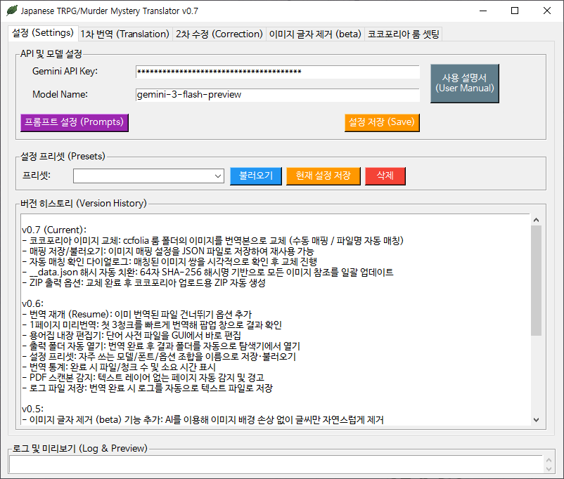
[그림 1] 메인 화면 — 5개 탭 구성
gemini-3-flash-preview입니다.
다른 모델은 Google AI 공식 문서에서 확인하세요.
PDF, TXT, 이미지 파일을 일괄 번역합니다. 용어집을 활용하면 고유명사를 일관성 있게 번역할 수 있습니다.
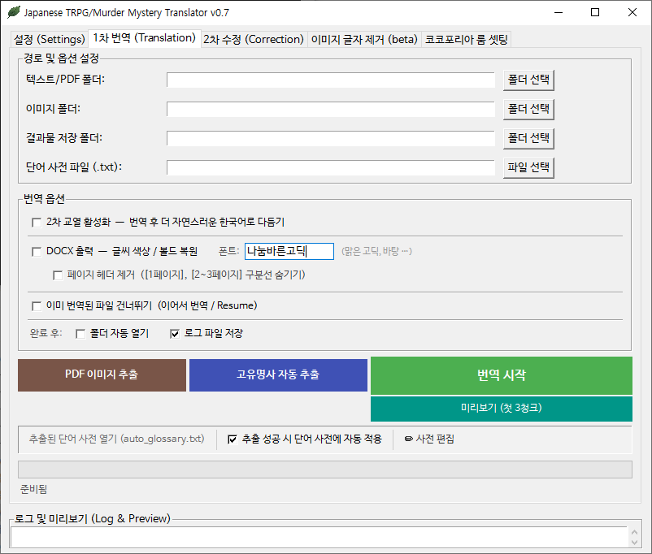
[그림 2] 1차 번역 탭 — 전체 설정 화면
.pdf, .txt 파일이 있는 폴더를 선택합니다..png, .jpg 이미지 폴더를 선택합니다. (OCR 번역)원문:역문 형식으로 자동 추출합니다.auto_glossary.txt로 저장되며 용어집 경로에 자동 설정됩니다.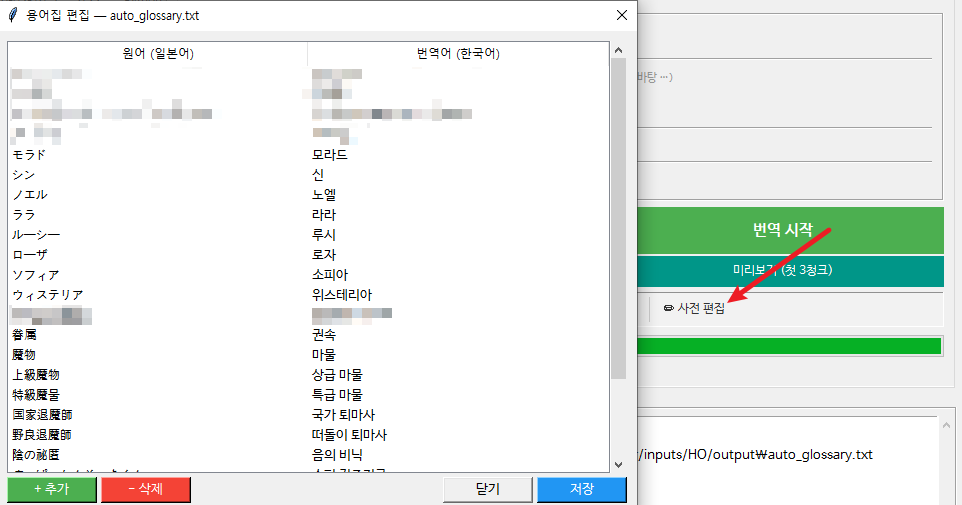
[그림 3] 고유명사 자동 추출 결과 예시 (auto_glossary.txt)
PDF에 포함된 이미지를 원본 해상도 그대로 파일로 추출합니다. 이미지 글자 제거나 코코포리아 교체 작업 시 필요한 원본 이미지를 손쉽게 확보할 수 있습니다.
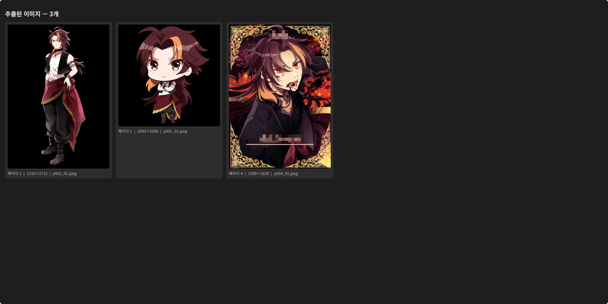
[그림 4] PDF 이미지 내보내기 결과 — 원본 해상도로 저장된 이미지들
PDF 파일을 번역할 때 이미지 선택 팝업이 표시됩니다. 번역이 필요한 이미지만 체크하여 불필요한 API 비용과 시간을 절약할 수 있습니다.
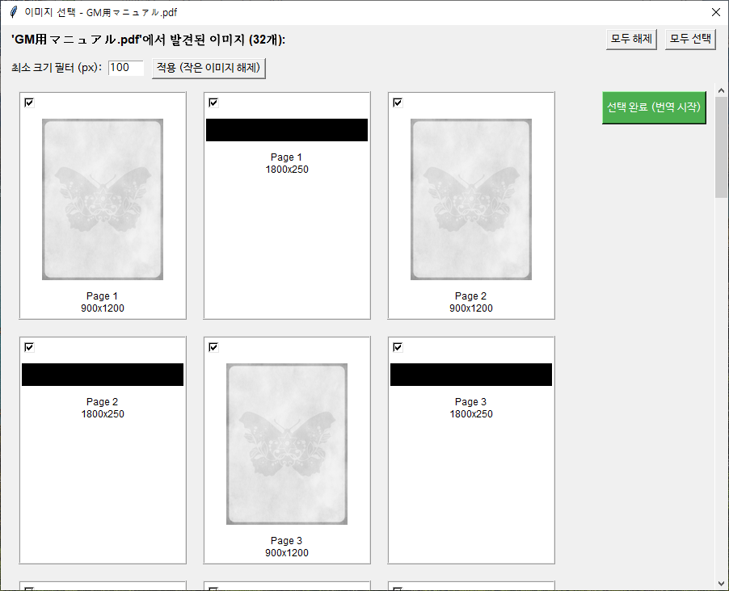
[그림 5] PDF 이미지 선택 화면 — 필요한 이미지만 선택하여 번역
.docx)로 저장합니다.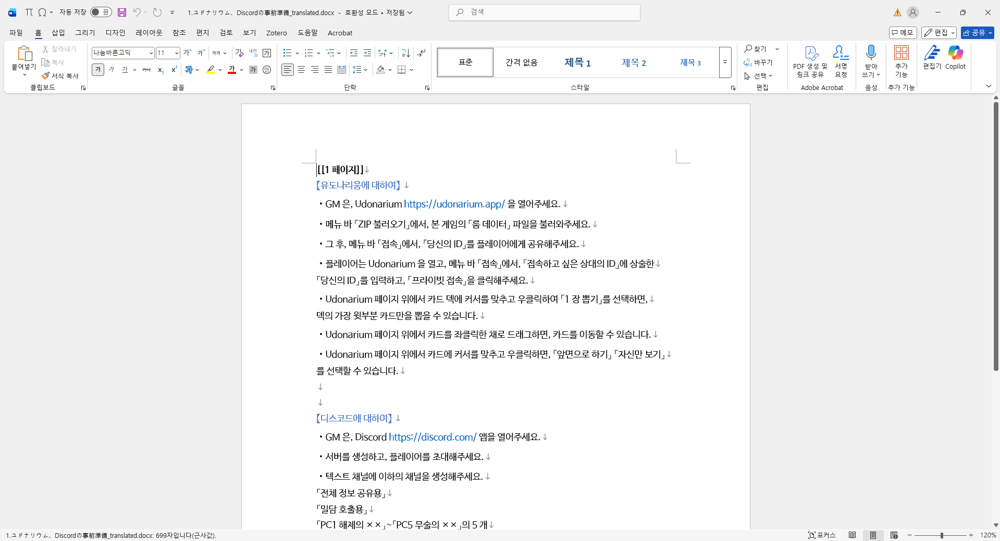
[그림 6] DOCX 출력 결과 — 글자 색상·볼드·하이라이트 보존
1차 번역된 결과물을 AI가 재검토하여 맞춤법·문맥·자연스러움을 다듬습니다.
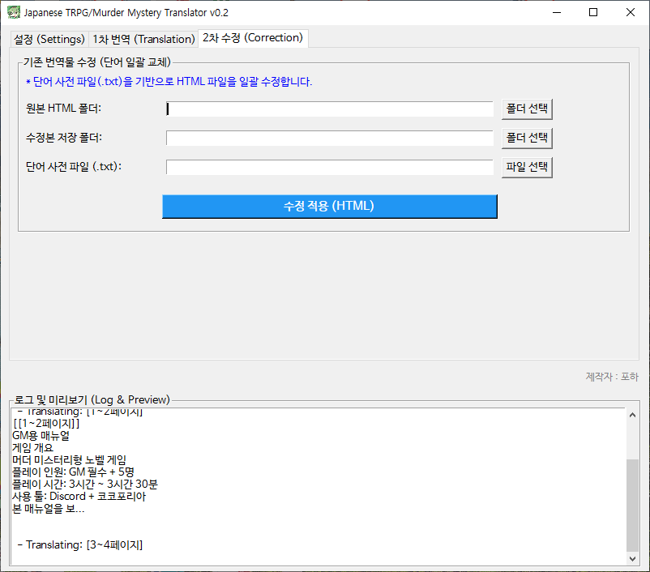
[그림 7] 2차 교정 탭 화면
AI를 이용해 이미지 배경을 보존하면서 텍스트만 제거합니다. 타이틀 로고 제거나 배경 이미지 정리에 유용합니다.
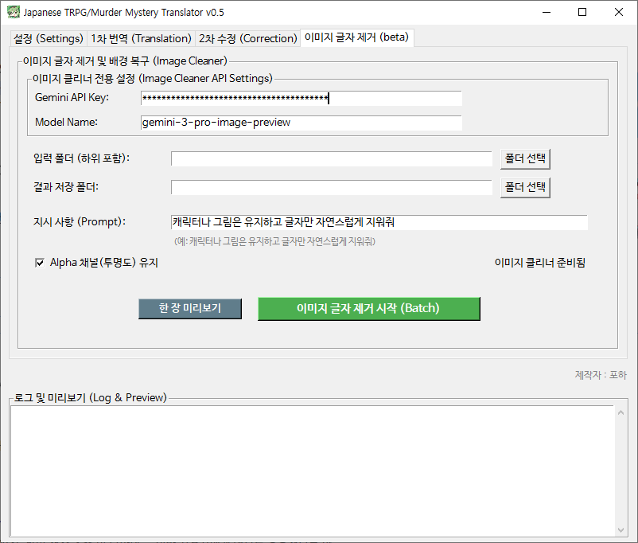
[그림 8] 이미지 글자 제거 탭 화면
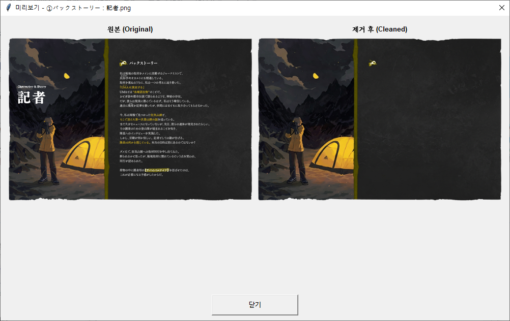
[그림 9] 제거 전/후 미리보기 비교
코코포리아(ccfolia) 룸 ZIP을 압축 해제한 폴더 안의 이미지를 번역본으로 교체하고,
__data.json의 SHA-256 해시 참조를 자동으로 업데이트합니다.
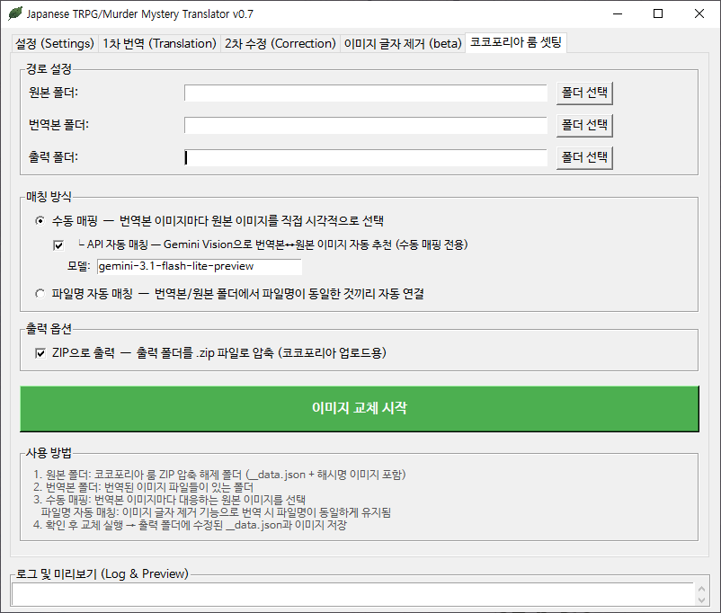
[그림 10] 코코포리아 룸 셋팅 탭 전체 화면
| 항목 | 설명 |
|---|---|
| 원본 폴더 | 코코포리아 룸 ZIP 압축 해제 폴더 (__data.json + 해시명 이미지 포함) |
| 번역본 폴더 | 번역된 이미지 파일들이 있는 폴더 |
| 출력 폴더 | 교체 완료된 결과물이 저장될 폴더 |
번역본 이미지마다 대응하는 원본 이미지를 직접 시각적으로 선택하는 방식입니다.
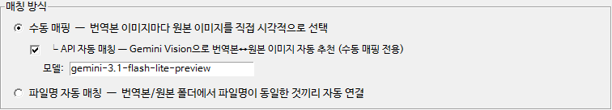
[그림 11] 수동 매핑 + API 자동 매칭 옵션
gemini-3.1-flash-lite-preview)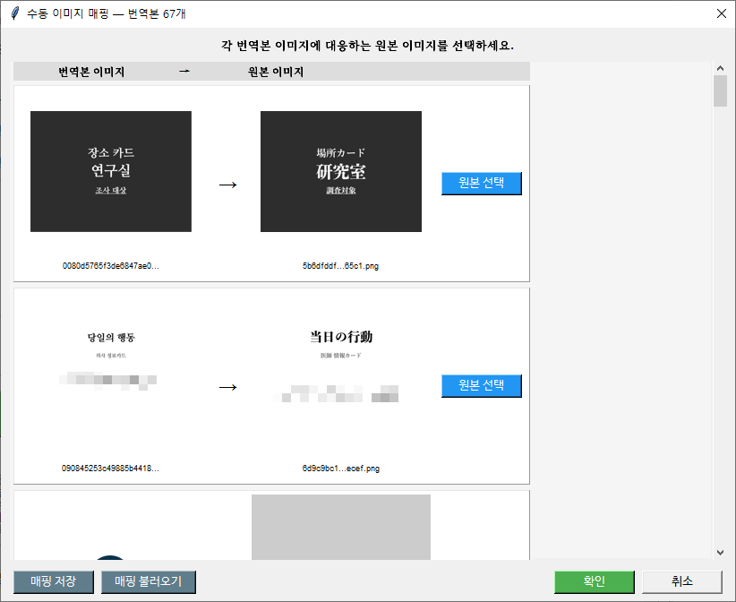
[그림 12] 수동 이미지 매핑 화면 — 번역본(좌) → 원본(우) 매핑
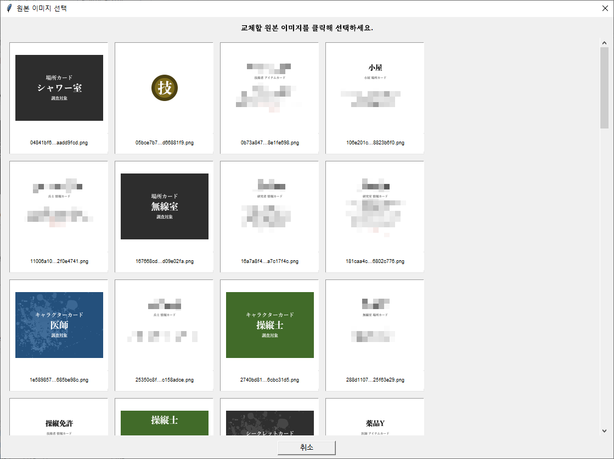
[그림 13] 원본 이미지 선택창 — 클릭하여 선택
원본 폴더와 번역본 폴더에서 파일명이 동일한 것끼리 자동으로 연결합니다. 이미지 글자 제거 기능을 사용했을 때 파일명이 유지되므로 이 방식으로 바로 매칭할 수 있습니다.
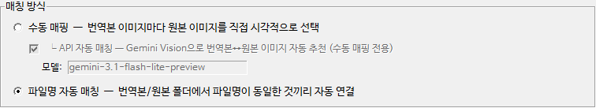
[그림 14] 파일명 자동 매칭 선택 화면
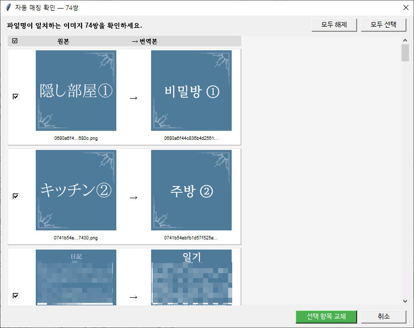
[그림 15] 자동 매칭 결과 확인 — 체크박스로 개별 선택/해제 가능
.zip으로 압축합니다. 코코포리아 업로드 시 바로 사용할 수 있습니다.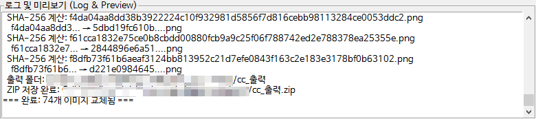
[그림 16] 이미지 교체 완료 후 로그 출력
__data.json 전체에서 구 해시를 일괄 치환합니다.
배경·카드·마커 등 모든 참조가 자동으로 업데이트됩니다.
output 폴더)은 웹브라우저나 워드 프로세서로 열어 확인할 수 있습니다.
제작자 : 포하 (v0.7)